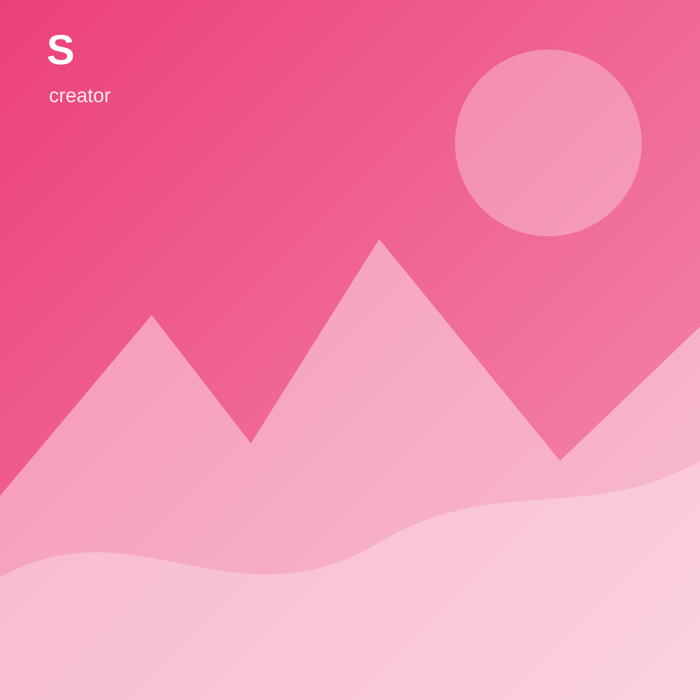
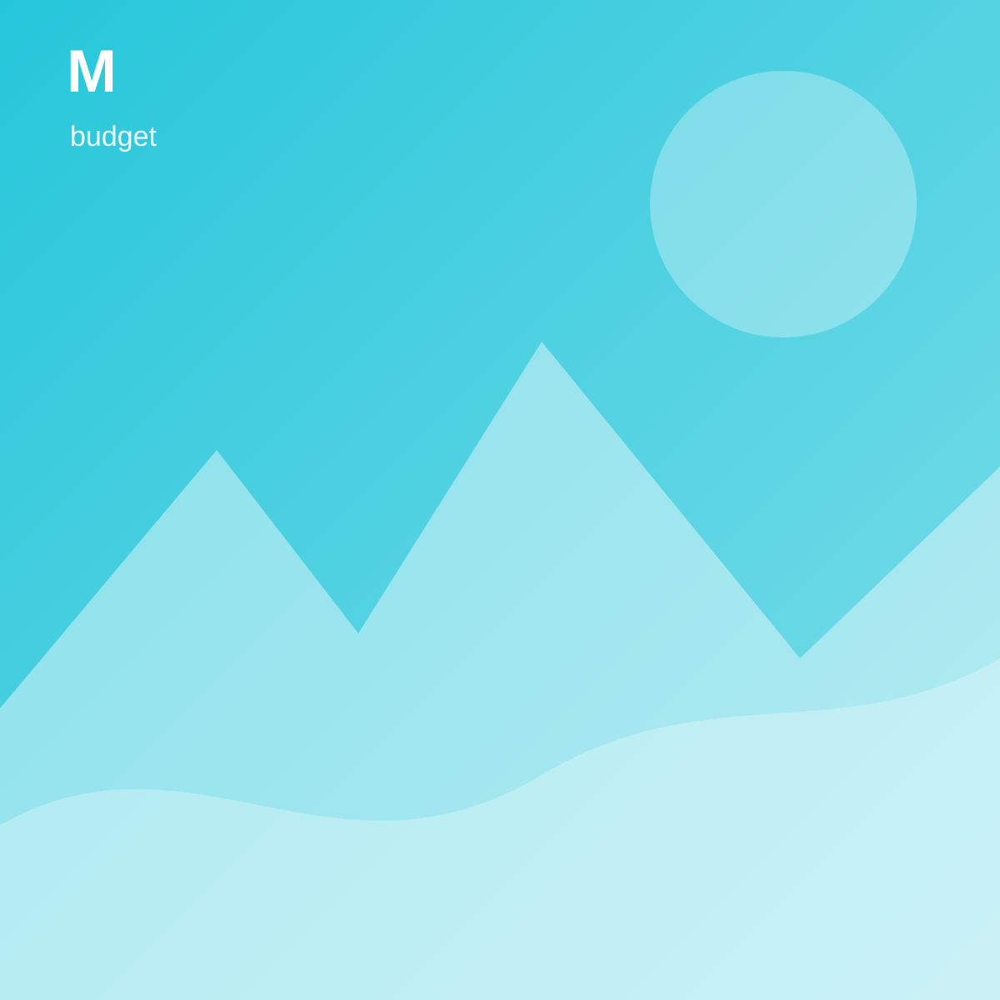
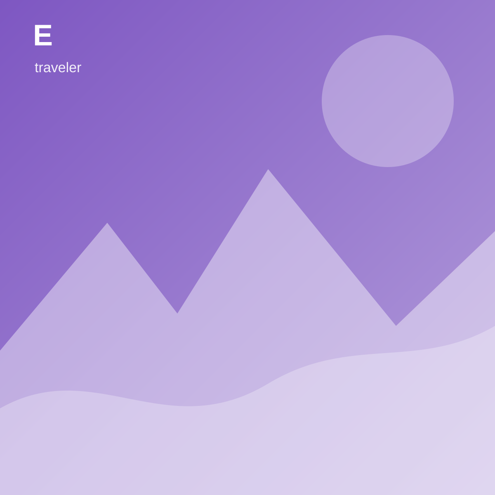

travelgram
Talk for Travel
실시간으로 여행 정보와 동선을 나눠보세요.
18명 접속

travel_sora
14:18
오늘 성수동 카페거리 사람 많나요? 조용한 곳 추천 부탁드려요.

budget_min
14:20
서울숲 뒤쪽 골목은 비교적 한산했습니다. 2호선 쪽보다 수인분당선 쪽 출구가 좋아요.

travel_ethan
14:23
사진과 함께 동선을 정리해서 나만의 여행실에도 올려둘게요!
전송